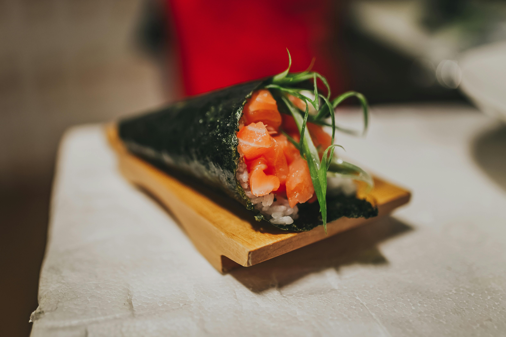

Japanese Dishes
Nigiri
Hand-pressed sushi: a slice of raw fish or seafood placed atop a small ball of vinegared rice. Common toppings include salmon, tuna, or shrimp.

Maki
Rolled sushi wrapped in seaweed (nori), cut into bite-sized pieces. Filled with ingredients like cucumber, avocado, and fish. California rolls and tuna rolls are examples.

Uramaki
Inside-out rolls where the rice is on the outside and nori is inside. Often topped or coated with sesame seeds, fish roe, or sauces.
Temaki
Hand-rolled cones of nori filled with rice, vegetables, and fish. Eaten like a sushi ice cream cone, great for casual settings.
Inari
Sushi rice stuffed inside sweet, marinated tofu pouches. Vegetarian-friendly and mildly sweet.
Shoyu Ramen
Soy sauce-based broth—clear, brown, and savory with a slightly tangy, salty flavor. Often served with chicken, bamboo shoots, and nori.
Miso Ramen
Rich, hearty broth made from fermented soybean paste. Originating in Hokkaido, it’s thick and nutty, often topped with corn, butter, pork, and bean sprouts.
Shio Ramen
Salt-based broth—light, clear, and often made with seafood or chicken. Tends to be more delicate and less fatty, with a clean flavor profile.
Tonkotsu Ramen
Creamy, rich broth made by boiling pork bones for hours. It’s thick, cloudy, and savory, with a deep umami taste. Popular in Kyushu.